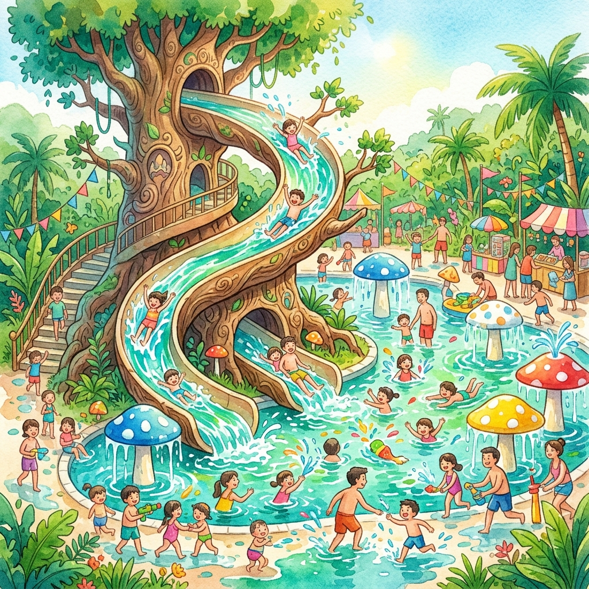

點選分類篩選，展開卡片查看詳細資訊

四層樓高的壯觀設施！30 米長透明滑道、快速滑水道、水迷宮。排隊可能要 30 分鐘，建議一入園就先衝！
巨型蘑菇造景，傾瀉而下的泉水化作水簾瀑布。超好拍，也超消暑！
放大花卉植物造景中穿梭，3 米高 U 型滑道超刺激！適合喜歡冒險的你。
森林意象 × 倒轉水迷宮，視覺震撼滿分！結合燈光和水霧效果。
0-6 歲 / 115cm 以下幼童專區，水深淺、安全設施完善，家長可安心陪伴。
龍舟、帆船、獨木舟體驗！在冬山河上感受不一樣的水上運動。
陸域的滑索、攀爬冒險設施！從高處滑下超刺激，搭配充氣滑梯和彈射飛椅。
每日國際民俗表演 + XR 數位互動展《森繪奇境》，不用弄濕也能玩一整天！
| 票種 | 平日 | 假日（今天） |
|---|---|---|
| 👤 個人券 | $250 | $350 |
| 👦 兒童券 (6-12歲) | $100 | $200 |
| 🎒 童玩護照（多次） | 依官網公告 | |
| 🎪 雙園套票（+傳藝） | $450 | $550 |
一定會全身濕！穿容易乾的衣服，帶一套替換
園區地板濕滑，穿球鞋會超後悔
全天戶外活動，每 2 小時補擦一次
園區有淋浴間，但毛巾自備比較衛生
補充水分超重要！園區有飲水機
想在水裡拍照必備，便利商店有賣
排隊時遮陽用，中暑就不好玩了
放手機、錢包、鑰匙等貴重物品
玩滑水道時水花猛烈，眼鏡容易飛走
地板偶爾粗糙，小傷口泡水會痛
價格偏觀光區價位（$80-$150），選擇多樣。推薦吃飽再入園或帶輕食進去。
距離園區約 10 分鐘車程，童玩節玩到 9 點出來剛好去夜市宵夜！
園區外步行可達的餐廳，正餐品質較好、價格也較合理。
3D 動畫 × 水幕 × 水舞 × 燈光的聲光大秀！每日 18:45–20:45 共五場，是童玩節的壓軸重頭戲。建議提早 15 分鐘到水岸邊卡位。
國際團隊 + 在地藝陣的盛大遊行！沿途互動、拍照、跟著跳舞，是整天最歡樂的時刻。
今年的國際亮點團隊！在宇宙劇場有專場演出，融合雜技、幽默與互動，不看可惜。
結合 XR 數位互動技術與插畫藝術的主題體驗館，適合午後避暑時段參觀。室內冷氣超舒服！
今天是假日票價 $350。建議 09:00 前到搶車位、下午 3:00 後入園避人潮。今天蘇澳潑水節也在舉辦，可考慮先去童玩節再去潑水節（兩地相距約 20 分鐘車程）。
依照你的心情，選一條路線深度探索
讓命運幫你決定今天要去哪裡！